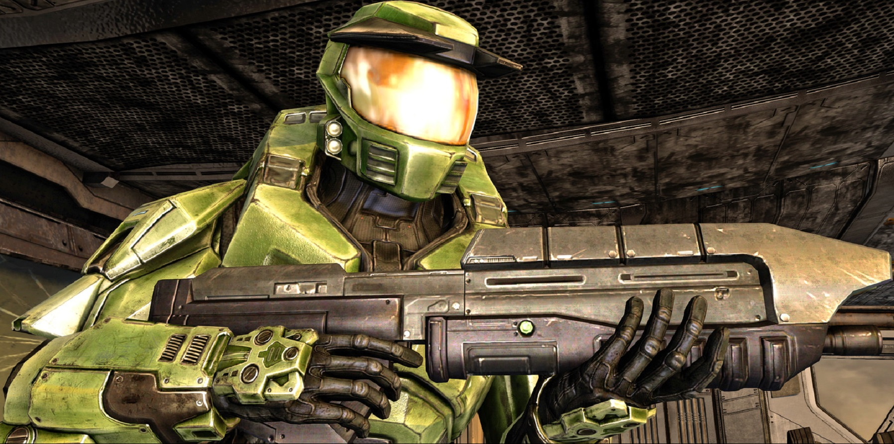

Audio and Visuals of Halo Combat Evolved by Bungie
In this website I am analyzing the audio and visuals of Bungie's Halo Combat Evolved based on my video game studies. The Halo Combat Evolved game trailer is a perfect example of the audio and visual components put together into one single work of art. For now I will analyse a piece of audio from the antagonists of the videogame:
(note)
This audio clip contains the sounds of the enemy aliens in Halo Combat Evolved called the Covenant Sangheili. These sounds include the death sounds of the Sangheili where they sort of cry and wail. Bungie could have not included crying death sounds when the enemies die so there must be a good reason for including them.
In The Skin Ego, Anzieu explains that crying can be a pure psychological reflex, and also later discusses the correlation of sound and infants (note 1). When a player kills a Sangheili in Halo and they hear their cries, it raises a multitude of questions within the player eliminating them. Were the aliens ever infants? How were the aliens raised? Do the Sangheili have a family? Are these enemies that the player is killing actually evil? Do the Sangheili have soles? These wails cause a psychological inner conflict within the player that can result in feelings of guilt.
My theory is that Bungie included the alien death sounds in Halo Combat Evolved to produce the similar cognitive dissonances of war. Without these Sangheili wails, these beings are mindless monsters, but with their cries the enemies become personified whether they are human or not. The player begins to realize that the Covenant is actually a complicated intelligent species and not just vacuous savages.
Now, take a look at this image of the protagonist, John Sierra 117, the Master Chief:

(note 3)
John Sierra 117 is a military supersoldier called a “spartan.” He is under the United Nations Space Command (UNSC) that explores, trains, and makes scientific discoveries for the Unified Earth Government. Something interesting about the Master Chief in this game and all future games is that he never takes his helmet off, not ever. Why did Bungie decide to do this for their main character?
In the “Mirror Stage” by Jacques Lacan, he discusses how the mirror stage starts in the heart of the imaginary and that one can be “reflected by” from someone else’s image or an actual mirror (note). After reading this, one can infer that Bungie decided to not include a human face on their protagonist, the Master Chief, in order for the assumed image of the player to be reflected on to the Master Chief who is absent of face.
Furthermore, the Master Chief’s mask is a blank space that allows the player to insert their identity into the main character of Halo Combat Evolved. This merges the game character and the player and eliminates separation between the two entities. Going back to the previous conversation, now it is as if the player is killing these aliens and not the Master Chief. The player is the Master Chief. This adds a whole new weight to Halo.
Finally, lets look at the Halo Combat Evolved game trailer: